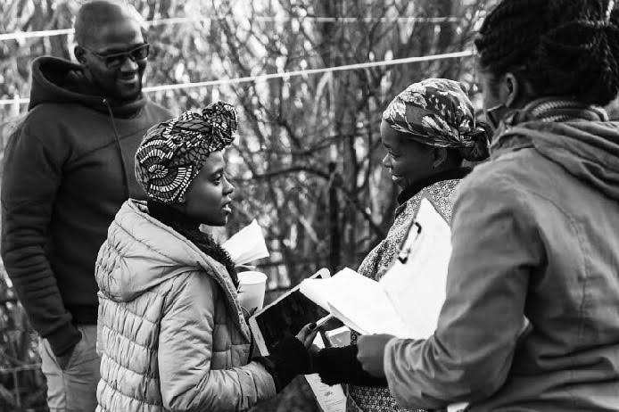

Reabetswe Rea Moeti - I want to exercise my voice and leave a mark
The ambitious African writer was motivated to tell her story to the world when she first met Malume Sammy Fever from Mabopane, Pretoria who helped her realize her vision. Rea says there were various roles in film that she could have chosen while studying but directing is what came naturally to her. “I didn't like the administrative aspect of producing so I leaned towards the creative storytelling functions like editing, cinematography and directing”, she explained.
Reabetswe Moeti is an award winning film director and writer hailing from Ga-Rankuwa, Pretoria and she made her first short film when she was still in high school. Moeti decided to chase her dream by pursuing her film studies at Cape Peninsula University of Technology, Cape Town and has been in it since.
When we ask how Moeti keeps on beating the odds that historically excluded black women in the industry, she emphasizes the importance of putting in hard work in what she does. However, she clarifies that one has to be strategic and work smart even though it is not easy. Rea believes the best way is to constantly look for new opportunities even when you don't think they apply to you. “I'm always researching, looking for opportunities, gaps in our industry and innovative ways to overcome the challenges we face”, elaborates Moeti.
One of her soul-stirring films inspired by a true event, the Marikana Massacre is called Mma Moeketsi. This film emanates from what happened in Marikana but it also speaks to the story of a real person called Mma Moeketsi. Rea says the story is close to her heart because Mma Moeketsi has worked for her family as a domestic worker for about 14 years now. “Her story was important to me because her son was at the mines when the strike happened so I wanted to tell her story to the world from her perspective”, she alluded.

Rea has ventured into many other film related activities including writing and directing TV shows which has helped to sharpen her skills and develop an instinct for directing. There are other films that are part of Moeti’s craft like The Virgin Vegan . When we asked which of her films were her favourites, Rea mentioned that The Virgin Vegan and Mma Moeketsi have always been her best films thus far. The renounced filmmaker says she is getting better at storytelling, communicating her point through visuals, sound design and good editing.
In any case, the struggle continues for Moeti as she is developing two films with MNET movies at the moment. “I am looking forward to finishing the writing process so that we can film those two features”, she confirmed. Rea says she will keep looking forward to exercising her voice as a storyteller and making her mark as a director.